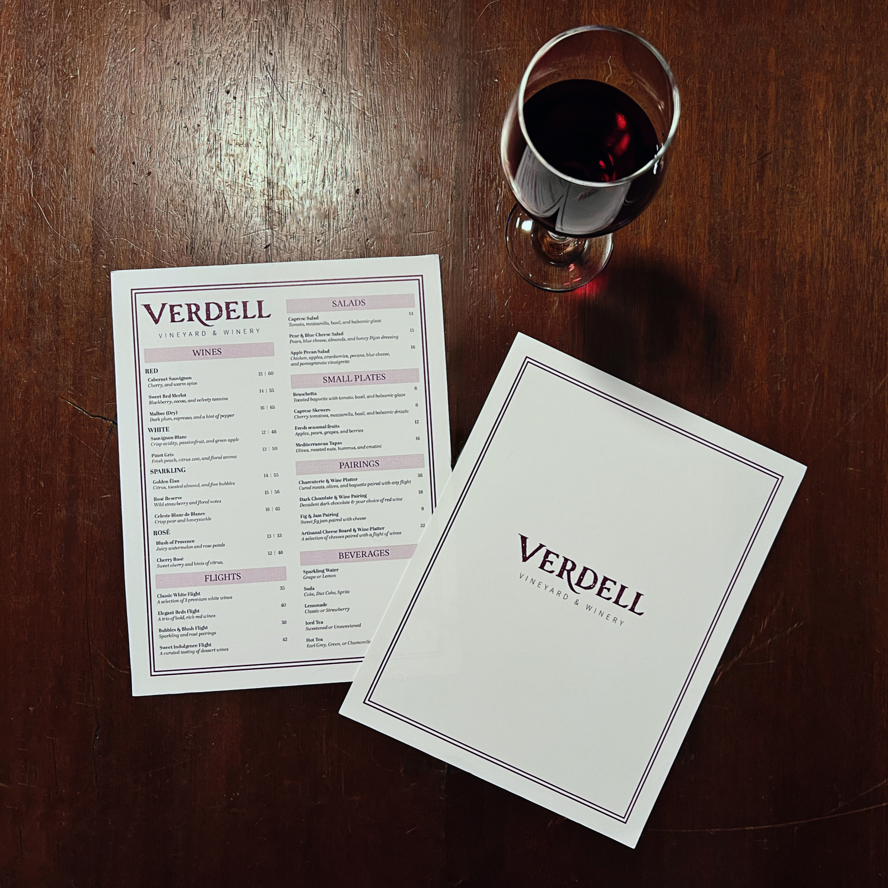
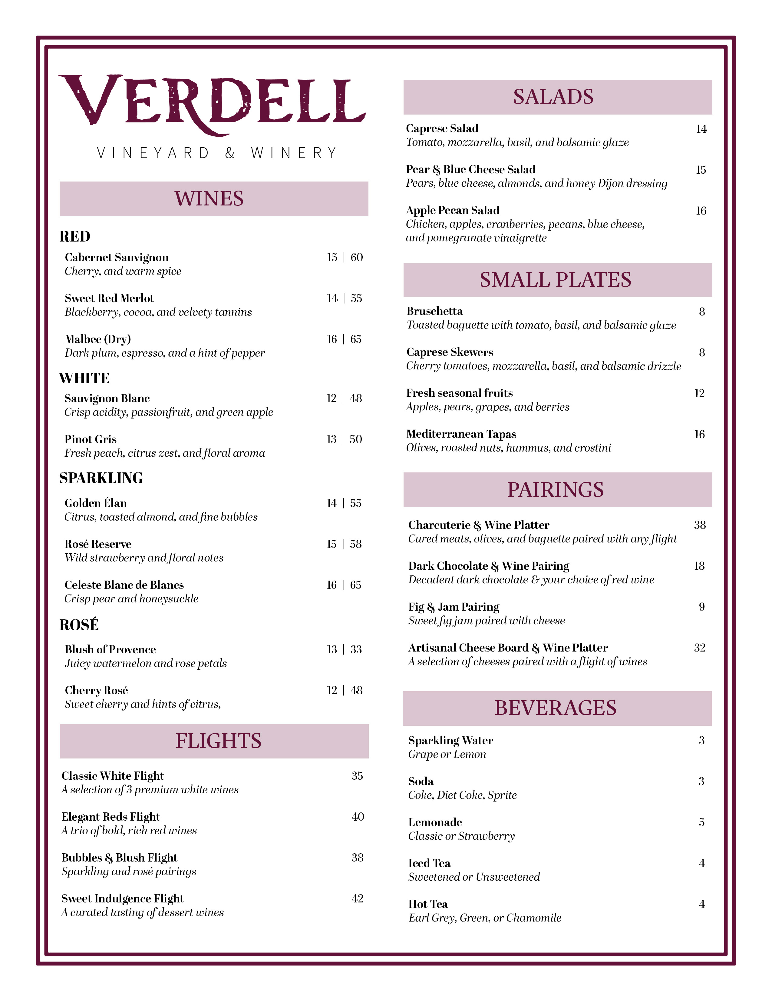
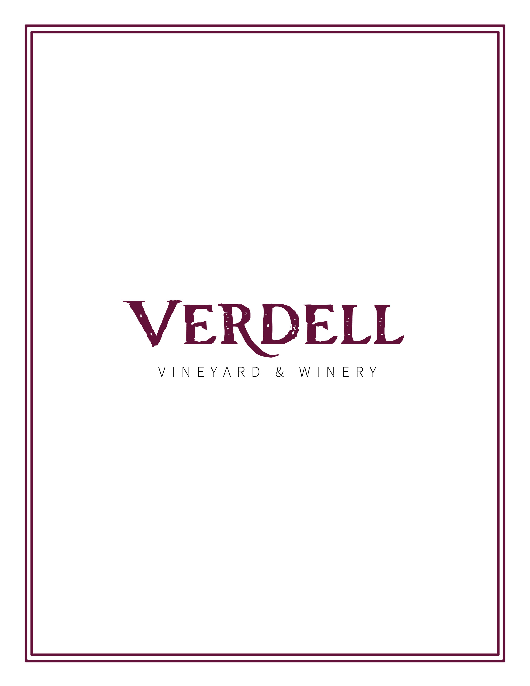

A menu design created for Verdell Vineyard & Winery, a conceptual upscale winery inspired by rustic vineyard aesthetics and elevated dining experiences. The project combines refined typography and editorial inspired layouts to capture the atmosphere of a higher end winery while balancing elegance with warmth and approachability.


